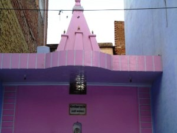

<?xml version="1.0" encoding="UTF-8"?><rss version="2.0"
	xmlns:content="http://purl.org/rss/1.0/modules/content/"
	xmlns:wfw="http://wellformedweb.org/CommentAPI/"
	xmlns:dc="http://purl.org/dc/elements/1.1/"
	xmlns:atom="http://www.w3.org/2005/Atom"
	xmlns:sy="http://purl.org/rss/1.0/modules/syndication/"
	xmlns:slash="http://purl.org/rss/1.0/modules/slash/"
	>

<channel>
	<title>Satishwar &#8211; Varanasi Temples</title>
	<atom:link href="index.html" rel="self" type="application/rss+xml" />
	<link>../../../../../index.html</link>
	<description>Temples of Varanasi as referred to in Kashi Khand</description>
	<lastBuildDate>Thu, 19 Jun 2025 05:16:46 +0000</lastBuildDate>
	<language>en-US</language>
	<sy:updatePeriod>hourly</sy:updatePeriod>
	<sy:updateFrequency>1</sy:updateFrequency>
	<generator>https://wordpress.org/?v=4.6.29</generator>
	<item>
		<title>SATISHWAR</title>
		<link>../../../../../shiva-temples/satishwar/index.html</link>
		<pubDate>Tue, 11 May 2010 07:36:24 +0000</pubDate>
		<dc:creator><![CDATA[admin]]></dc:creator>
				<category><![CDATA[Other Shiva Temples (S-Y)]]></category>
		<category><![CDATA[Satishwar]]></category>
		<category><![CDATA[Shiva Temples]]></category>
		<category><![CDATA[mrityunjeshwar]]></category>

		<guid isPermaLink="false">../../../../../p=512.html</guid>
		<description><![CDATA[Long time back Lord Brahma offered intense prayers to Lord Shiva whereupon the latter appeared before the former and offered a divine wish.  Lord Brahma desired that Lord Shiva should become his son and Goddess Parvaty should become the daughter of Daksh.  Lord Shiva agreed to this. Lord Shiva appeared out of Lord Brahma’s head [&#8230;]]]></description>
				<content:encoded><![CDATA[<p>Long time back Lord Brahma offered intense prayers to Lord Shiva whereupon the latter appeared before the former and offered a divine wish.  Lord Brahma desired that Lord Shiva should become his son and Goddess Parvaty should become the daughter of Daksh.  Lord Shiva agreed to this.</p>
<p>Lord Shiva appeared out of Lord Brahma’s head as a small boy and was named by Lord Brahma as Rudra. Lord Brahma was very happy that he can keep Lord Shiva (though in the form of small boy Rudra) in his house, he can always play with the boy, eat with the boy, sit in the same place and undertake all such activities that a father shares with his son.</p>
<p>While Lord Shiva took the form of a boy named Rudra as mentioned above, Goddess Parvaty became the daughter of Daksh and was known as Sati. When she came of age, in order to get a good husband, she came to Kashi and started worshipping Lord.  One day a Ling appeared before her and from inside came the voice of  Lord Shiva.</p>
<p>Lord Shiva told Sati that her wishes will be fulfilled and there was no further need of any intense prayers. The Ling which appeared before her was called Satishwar and those girls or boys who sincerely worship this Ling will get spouse of their choice.  Besides, those devotees who pray to this Ling with sincere devotion will get their wishes fulfilled.</p>
<p>&nbsp;</p>
<p style="text-align: left;"></p>
<p style="text-align: left;">Lord Shiva further told Sati that the latter’s father would give her in Kanyadaan to the former and that Sati’s wishes would be fulfilled. After saying this, Lord Shiva vanished inside the Ling. (Kashi Khand, Chapter 93)</p>
<p><strong><span style="text-decoration: underline;">LOCATION OF SATISHWAR</span></strong></p>
<p>Satishwar is located at K-46/32, on the road leading to Vridhha Kaleshwar/Mrityunjeshwar.  People can travel upto this place by rickshaw and the nearest landmark is Bisheshwarganj/GPO.</p>
<p><strong><span style="text-decoration: underline;">TYPES OF POOJA</span></strong></p>
<p>The temple is open from 6.00 a.m. to 02.00 p.m. and from 04.30 p.m. to 10.00 p.m. Aarties are performed in the morning and  in the evening.  The timings may vary a little.</p>
<p>&nbsp;</p>
]]></content:encoded>
			</item>
	</channel>
</rss>
